PDO Multi-DB Info Manager v1.0 Documentation | |
| Updated: 16/09/13 By: enri_pin Email: enri_pin@yahoo.com | Thank you for purchasing my item PDO Multi-DB Info Manager v1.0. If you have any questions that are beyond the scope of this help file, please feel free to email me. If you like this file please leave me a vote. Thanks so much! |
Table of Contents
| |
Features - topPDO Multi-DB Info Manager is an application developed in PHP that allow you admin your SQL Server, PostgreSQL SQLite 3 and MySQL databases without the need of write any code(no php, neither sql) in an easy way, using an attractive web interface. You can do local and remote connection, export data from your tables in several file formats as CSV , Excel (XLS, XLSX), PDF, XML and SQL files. You can import information from CSV, Excel (XLS, XSLX) and SQL files, directly in the table that you choose. The application also allows you to consult, insert and edit the data saved in your database tables in a easy way and make customized searches on it, you can consult and export information from join tables without write sql code, also you can save your previous queries for consult them later. If you are skilled in SQL you can execute your own queries (Insert, Update, Select, Delete, Drop, Create, etc.) And export your results in CSV, XML, excel (XLS, XLSX) and PDF files. And finally you can create backup of the structure and data of your database, and restore it later. Or you can restore backups created for another application.
Requirements - top
Installation - topUnpack the content of the zip "PDO Multi-BD Info Manager.zip" file into a directory of your web site. If you use MySQLYou don't need to configure anything because for default PHP has the PDO MySQL extension enabled. If you use PostgreSQL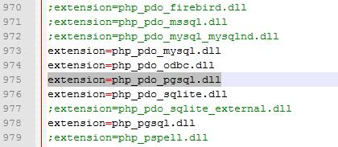You need to find the file php.ini in the php installation directory and open it in a text editor. After open the file, look for the line ";extension=php_pdo_pgsql.dll", delete the ";" and save the file. If you use Apache it's possible that you have to add this sentence in the httpd.conf "LoadFile "C:/Program Files/PostgreSQL/x.x/bin/libpq.dll", "x.x" represent de version of PostgreSQL that you have installed. Save the changes. 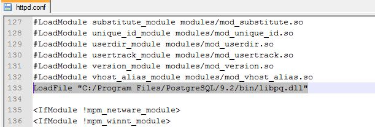Restart the web server. Now you have PostgreSQL extension enabled in PHP. And you are ready to use the PDO Multi-DB Info Manager If you use SQL ServerFor use SQL Server you will need to download The Microsoft Drivers 3.0 for PHP 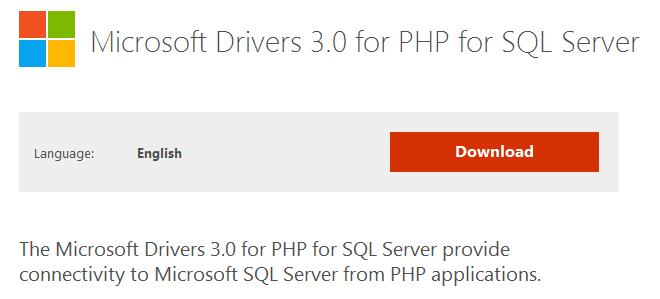You will have two options to download SQLSRV20.EXE and SQLSRV30.EXE files respectively. I recommend you download both You can find more information here for use the version 3.0(for PHP 5.4) of the driver you will need Microsoft® SQL Server® 2012 Native Client After download if you use PHP 5.3 or later unpack the file SQLSRV30.EXE in a directory and you will see several files named "php_pdo_sqlsrv_5x_nts.dll" and "php_pdo_sqlsrv_5x_ts.dll". The "x" represents the version of your php, and the "ts" or "nts" means if your PHP version is Thread safe or not(The easier way to find this is look in your php installation directory if you have a file named "php5ts.dll" or only "php5.dll". If you have the first one your PHP version is Thread safe). For example if you use PHP 5.3 Thread safe you will use the file "php_pdo_sqlsrv_53_ts.dll". Sometimes although your PHP version is 5.3 the file "php_pdo_sqlsrv_53_ts.dll" won't permit your web service start and then you will have to see in the file SQLSRV20.EXE 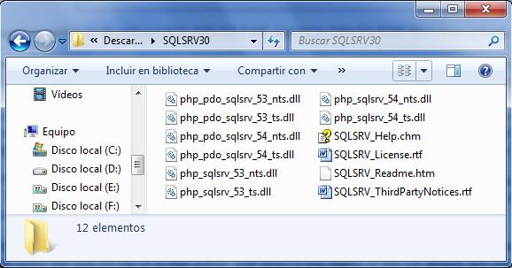If you use PHP 5.2 or PHP 5.3 unpack the file SQLSRV20.EXE in a directory, then you will see the same kind of files but with different version for PHP 5.2 and PHP 5.3. Here you will have to try with one works with your web server. For example a used the file "php_pdo_sqlsrv_53_ts_vc9.dll" After you have the file for you copy it in the directory "ext" in your php installation directory. The you have to enable the extension in the php.ini file. For that open the php.ini file in a text editor and search the place in the file where are the extensions. Next you have to add the sentence "extension=name of the file you put in the 'ext' directory" for example I added the sentence "extension=php_pdo_sqlsrv_53_ts_vc9.dll". Then save changes in restart you web server(If this doesn't start again is possible that the file that you chose isn't the correct one). Once you restart your web service you will have the extension for SQL Server enabled in you PHP server (for PHP 5.4 you will need to install the Microsoft® SQL Server® 2012 Native Client too). And you are ready to use the PDO Multi-DB Info Manager. Getting Started - topOpen the file "index.php" in your web navigator. The first time you open the "index.php" this is the login page. In the Login page your user name and password will be "admin". But you can change this in the "change password page". The first time you login you will be redirected to the database configuration page, where you have to create and save at least a connection setting for you database. You will see this:
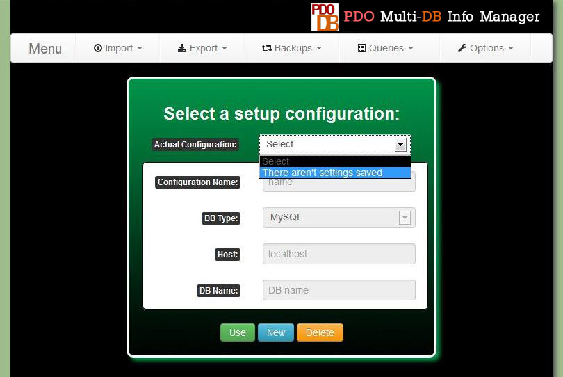
In this page you can switch between the connections setting that you have saved. You can also delete and create connection settings. You won't be able to enter to the main menu until you create and save at least a connection setting. For create a new connection setting you only have to press the button "New" that will enable the edition of the setting connection fields. 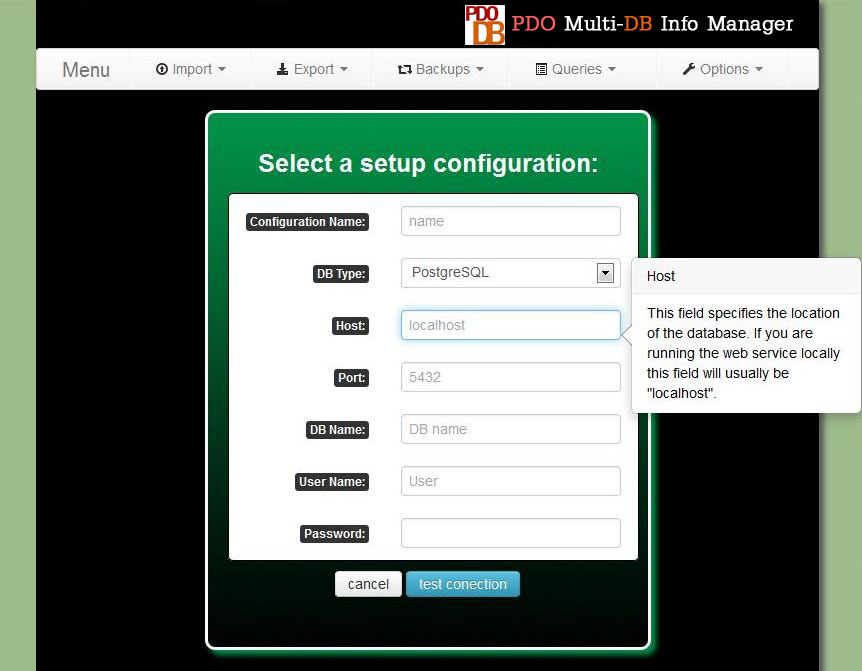
DB Type: In this field you have to specify the database manager that you are using Host: This field specifies the location of the database. If you are running the web service locally this field will usually be "localhost". But if you are installing the application on a hosting usually they will assign you an address for the host that could be something such as sql312.260mb.org Action (only for SQLite): And this option you can choose to upload a SQLite Database file(.s3db) or use an file that you have previously uploaded. DB Name: Here you have to write the name of your database. For SQLite you should use this field only when you want to use a Database file that you have already uploaded. If you haven't upload the sqlite file then select the options "Upload DB file" Select file (only for SQLite): This option allows you upload a SQLite Database file. The file must have the extension ".s3db". The file will be uploaded to the sqlite directory. Port (only for PostgreSQL): For PostgreSQL, besides the name you must also specify the port that PostgreSQL is using. By default this port is 5432 Authentication mode (only for SQL Server): SQL Server has two modes for authentication. The first one is "Windows Authentication" that use the name and password of the Windows user for connect to the database. For that reason you don't have to write any password because it uses the windows user credentials. The second one is the "SQL authentication". In this mode you have to write an user and password for log in. User Name: User that you use for connect you to your database Password: Password that you use for connect you to your database Once you have written all the field for your database click in the button "Test" and if all is good you will receive a message "Success!" and the "Save Configuration" button will appear. Click it to save and now you have stored your first connection setting. You can store as many as you need. But we haven't finished yet, now you have to press the button "Use" for use a specific connection setting. You will be required to input your user name and password(until you don't change them your user and password will be "admin"), this is a security measure. If all is good you will be redirected to the main menu of the application, and now you are ready to use it. 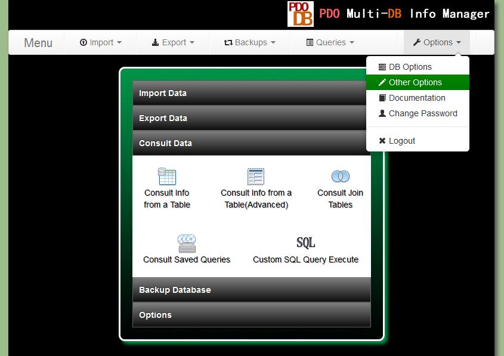 Import Data - topIn the menu "Import" you have 3 options. Import from a CSV file, from a Excel file and from a SQL file. The process for import information from a CSV or an Excel file is very similar. For that reason I only will explain how import information from a CSV file. The first step is select the option "From a CSV file" in the menu "Insert". You will see this page:

A comma-separated values (CSV) (also sometimes also called character-separated values, because the separator character does not have to be a comma) file stores tabular data (numbers and text) in plain-text form. Plain text means that the file is a sequence of characters. A CSV file consists of any number of records, separated by line breaks of some kind; each record consists of fields, separated by some other character or string, most commonly a literal comma or tab. For this reason before import data from a CSV file you have to know what kind of character is used like separator in this file. You can open it with any text editor. Usually the separator character is a comma ( , ) or a semicolon ( ; ). When you know which one is the separator character you can change the configuration of the application (Option, Other Option) and indicate which character are using as separator Here you have to select the table where you want to introduce the data from the CSV file. After select the table you will see the option for select the file. Here you have to select from your pc the CSV file from where you want to import information. You also will have the option to delete all the data in the table before import the information from the CSV file. You can choose what to do if there is a repeated record in the file from where you are importing the information. And then you have to press the button next. 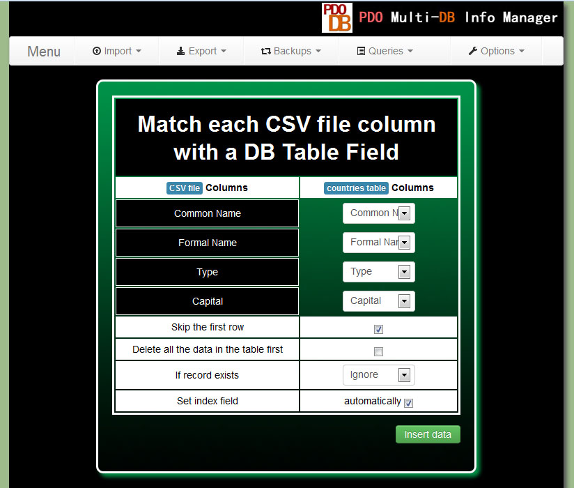
Once the importation has finished you will see a message like this one: 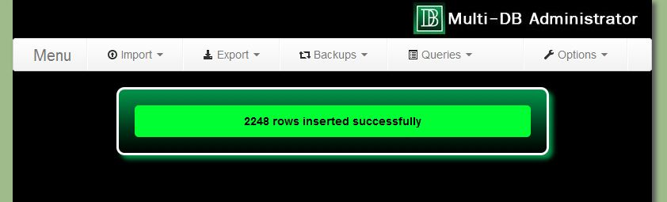 Export Data - topYou have several ways to export data using PDO Multi-DB Info Manager. You can export data in 4 formats: CSV, XML, Excel(XLS, XLSX you can switch using the menu Option, and selecting "Other Options"), SQL and PDF files. The first way to export data is using the menu "Export" and selecting the option that you need. Then you have to select the table from where you want to export information. Next you can choose which fields of the table that will be included in the file that will be generated(for select/deselect multiple items you have to press the key Ctrl). Use this option if you want to export all the rows in the table. 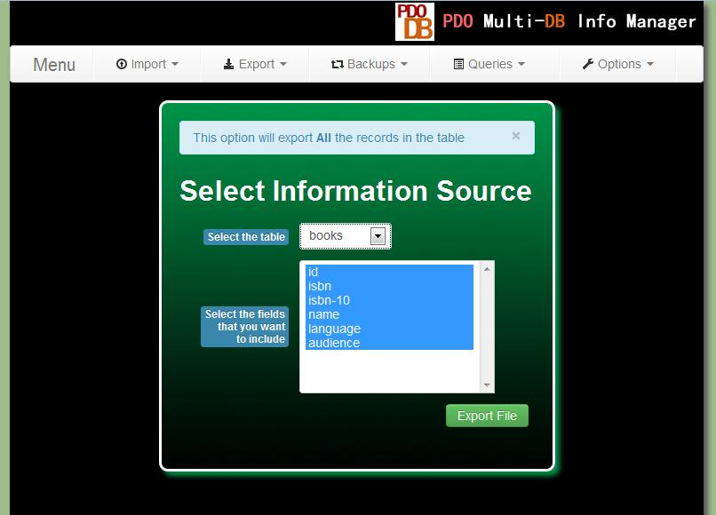
Consult, Create, Edit, Delete and Export Data - topIf you want to export information in a more refined way or only consult the information saved in a table you can use the menu Queries and the options Simple or Advanced. Using the option "Simple"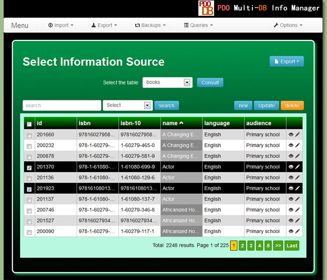
In this option you only have to choose the table that you want to consult. After press the button "Consult" the information will be displayed in a table with pagination included. If you want to do a search you only have to write it in the "search" field and select a table column. You can change the number of rows that will be displayed in each page in the menu "Option" and selecting "Other Options". For edit a row you only have to press the pencil icon, and you will see a square with the information of the selected row. Change the information and press the button "Update" and the changes will be saved in the table. For update several rows at once check each row checkbox and press the button "Update". For add a new row you only have to press the button "New" at the top right of the table. For delete one or several row use the checkboxes and then press the button "delete". 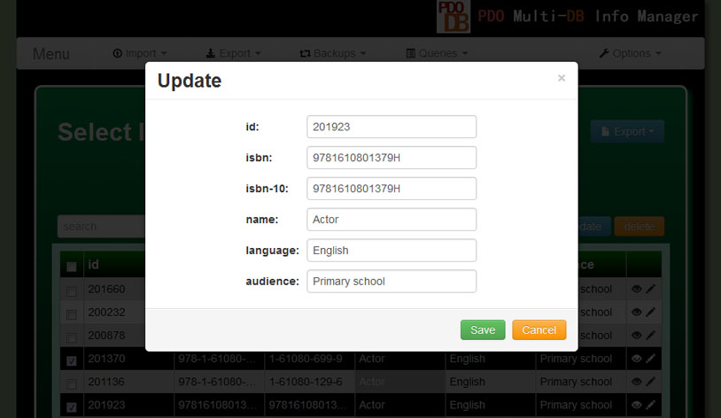
You can export the result in CSV, Excel(XLS, XLSX), PDF and SQL formats. You only have to choose a format and press the button "export" at the top right of the page Using the option "Advanced"This page has two modes. Easy and Advanced. If you use the "easy" mode you can create personalized queries in graphic mode. You can export the result of your query to a CSV, Excel or PDF file. You can also save your queries in a list to consult them later. 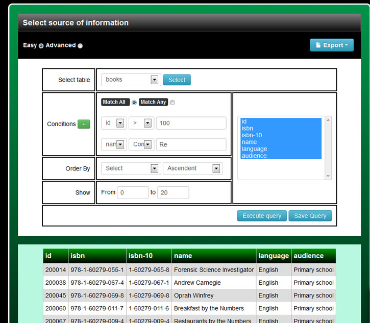
The "advanced" mode allows you to execute your own sql queries and export the result to a CSV, Excel or PDF file. This page only allows you execute "select" and "show" queries. 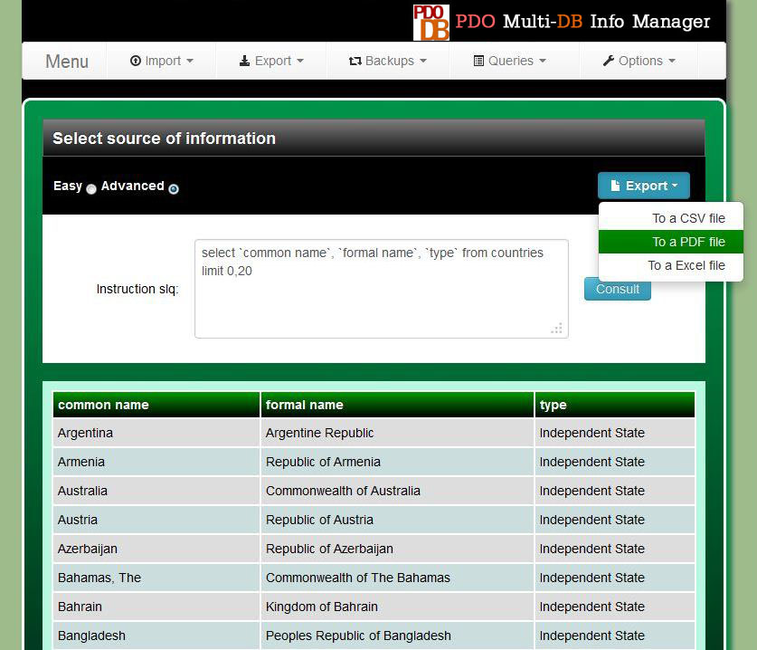 Using the option "Join Tables"This option is useful when you have linked tables in your database. An SQL join clause combines records from two or more tables in a database. Here you can consult and export join tables queries in a graphic interface in a very easy way. First you have to select at least two of the tables shown in the list. And after you press the button next you will see a list of field for each table where you can select the table fields that will be shown in the result query. 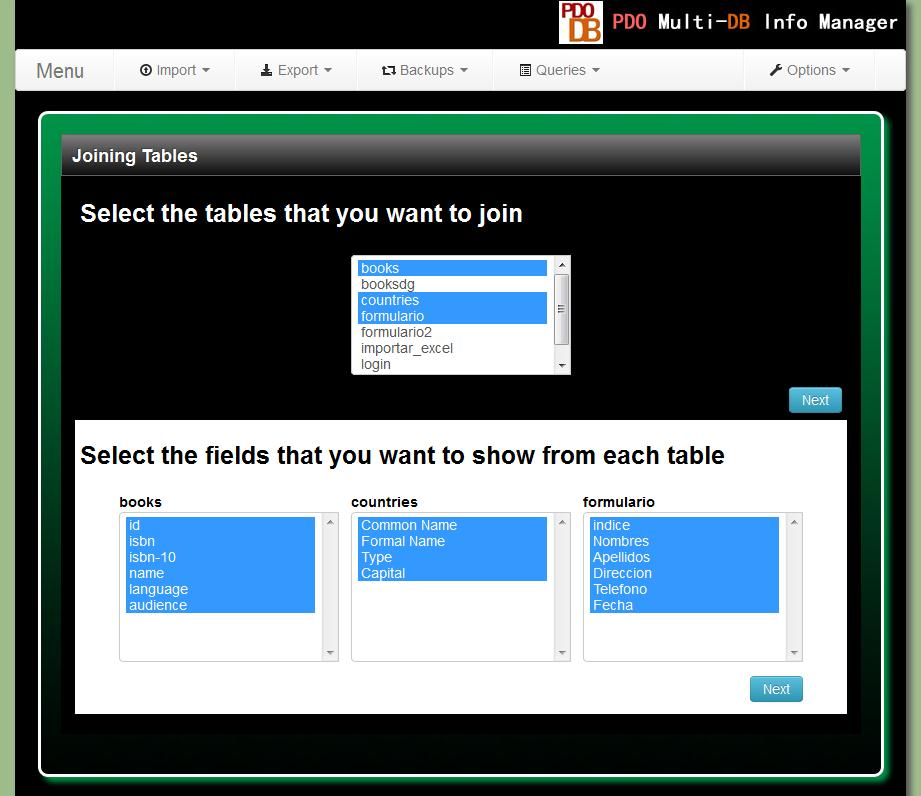
Then you can choose which fields will be used as join conditions. Usually these fields have to be equals in both tables for get any useful data. 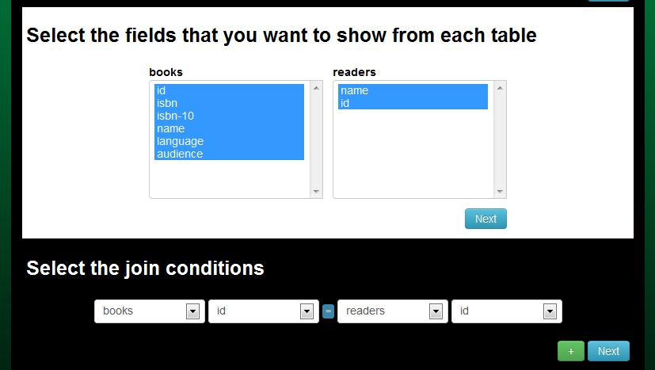
And finally you have the options to specify another conditions: 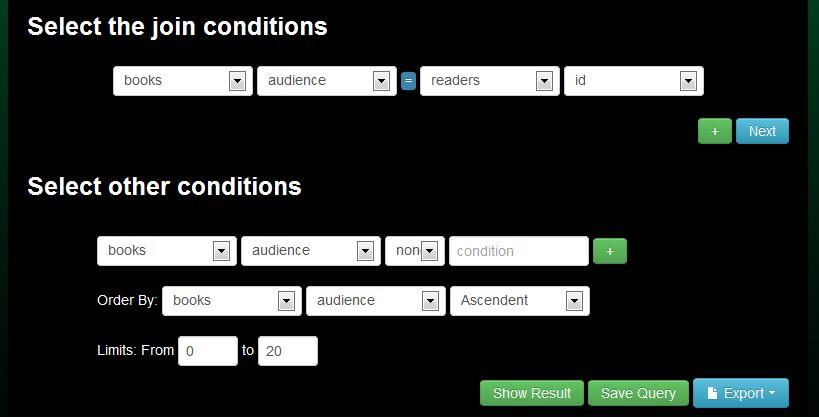
And then you have the option to show the join tables query, export the info to a external file or save the query to consult it later. 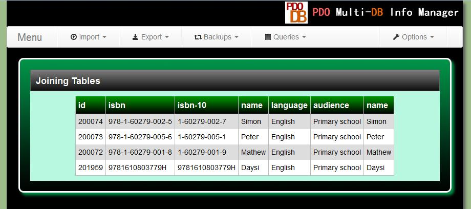
Using the option "Saved Queries"In this option you can consult and export queries that you previously saved. Only select a query from the list and press the button "Show". 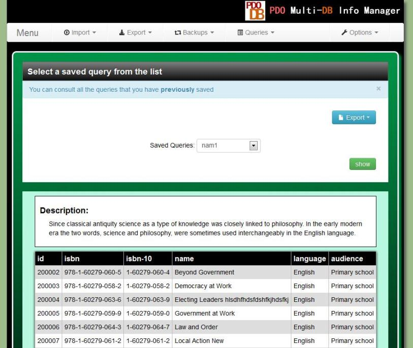
Execute Custom SQL Queries - top
In the menu "Queries" there is an option named "Custom SQL". This page allows you execute almost all sql queries. You can use select, insert, update, delete, create, alter, show, etc. You only have to write your query and press the button "execute". 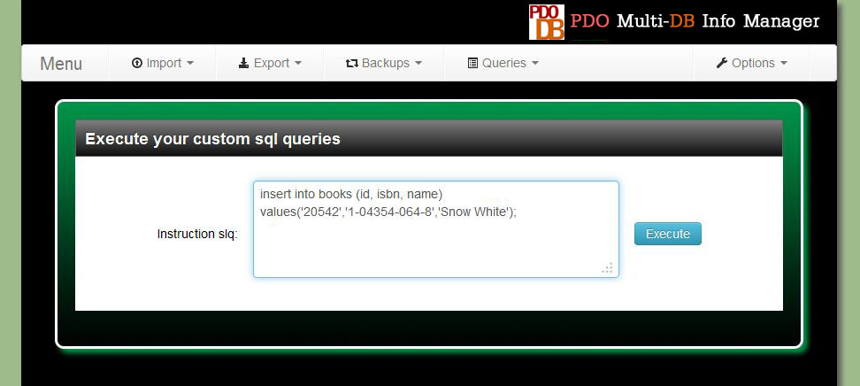 Create and Restore Backups- top
For create a backup you have to select the option "Create Backup" in the menu "Backup". You will see this page: 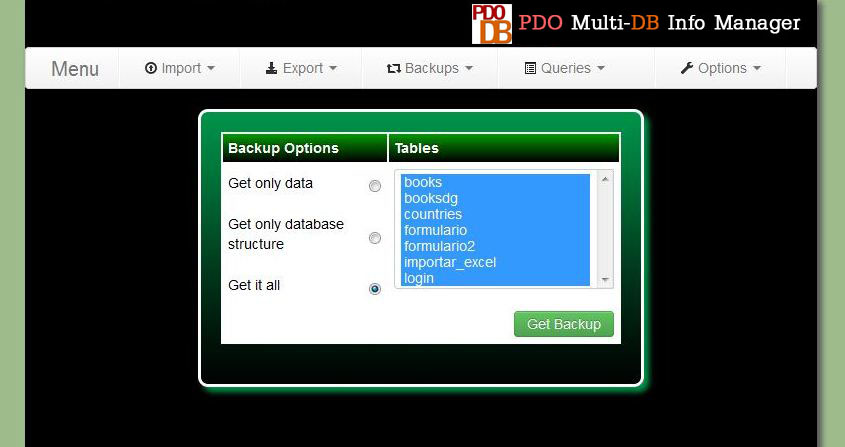
Here you can indicate which tables you want to include in the backup(press ctrl for select multiple items). You also can choose if only want to get the data from the tables, only the structure of the database or both, the data and structure of the database. For restore a previous backup, you have to select the option "Restore Backup" in the menu "Backup". And then you have to indicate where is the backup file.
Change your User Name and Password - topThe first time you use the application you user and password will be both "admin". But this is not a secure password then you likely will want to change it. For do it select the option "Change Password" in the menu "Options". 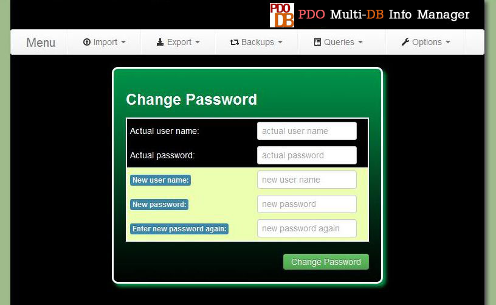
Here you only will need to write your actual user name and password, and your new user name and password. Important! Don't forget your new user name and password or you won't be able to login in the application. And then you only have to press the "Change Password" button. And now you have changed your user name and password. The next time you login in the application you will use them. Don't forget them
Other Configurations - topYou can access to this page selecting the option "Other Options" in the menu "Options"

Here you can change the next options: CSV separator character: A CSV file consists of any number of records, separated by line breaks of some kind; each record consists of fields, separated by some other character or string, most commonly a literal comma or tab. For this reason before import or export data from a CSV file you have to know what kind of character is used like separator in this file. Here you can indicate the character that the application will use as default. Save excel files in: Here you can set the excel default export format. You have two options "Excel 2007" or XLSX files and "Excel 2003" or XLS files. Number of rows shown in the Simple Query Table: Here you can set the number of rows that will be displayed in the page "Consult data"(Menu "Queries", option "Simple"). Memory Limit(Mb): By default php has a memory limit set in the php.ini file but sometimes when you want to export a large quantity of data in Excel or PDF files the default value is insufficient. In this option you can change the memory limit for the application. FAQs - top
Contact - topIf you have any doubt or if you need a freelance work you can contact me at enri_pin@yahoo.com Greetings - topIcons are used thanks to http://www.fatcow.com/ GLYPHICONS Halflings glyphicons.com/ | |